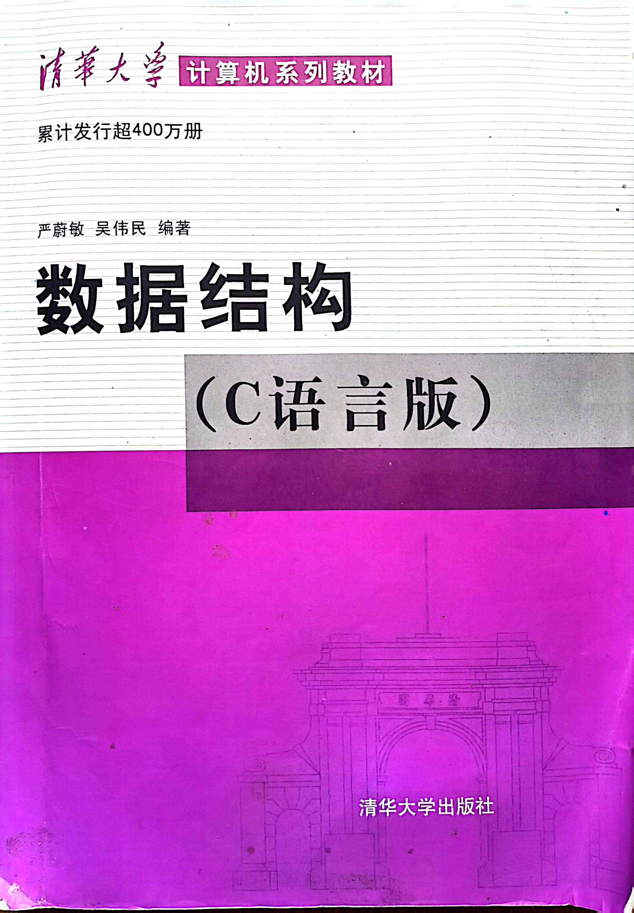
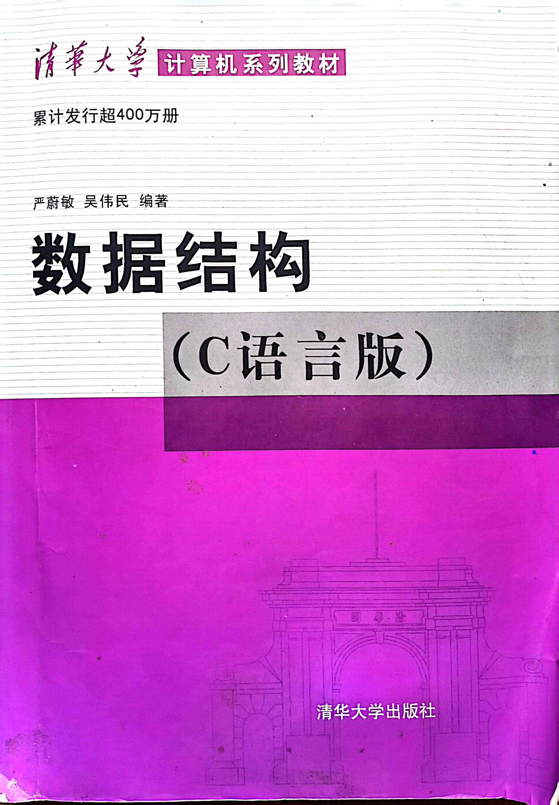
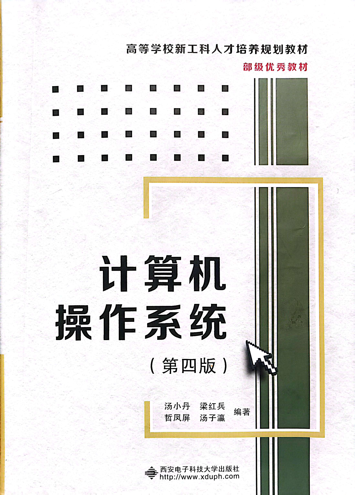
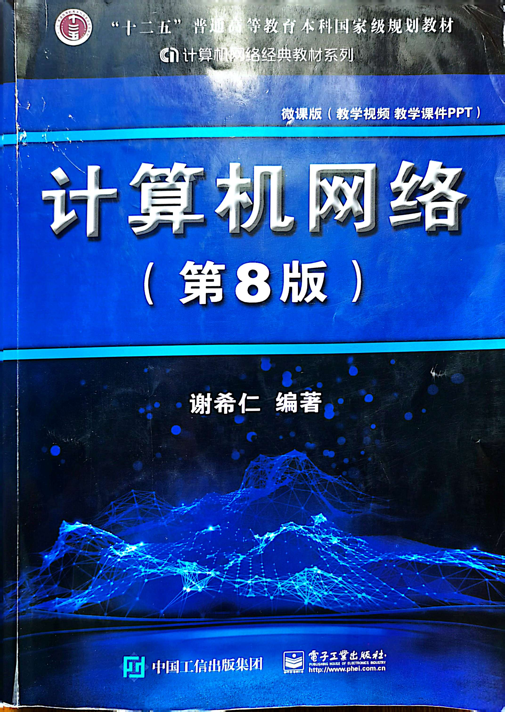
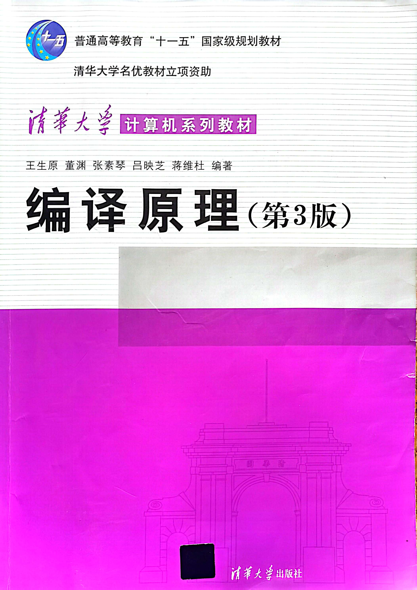

数据结构

数据结构是计算机存储、组织数据的方式。
数据结构的研究内容是构造复杂软件系统的基础，它的核心技术是分解与抽象。
程序设计中常用的数据结构包括如下几个：
数组、栈、队列、链表、树、图、堆、散列表
我们所用课本是由严蔚敏老师编著的数据结构（清华大学出版社）

数据结构是计算机存储、组织数据的方式。
数据结构的研究内容是构造复杂软件系统的基础，它的核心技术是分解与抽象。
程序设计中常用的数据结构包括如下几个：
数组、栈、队列、链表、树、图、堆、散列表
我们所用课本是由严蔚敏老师编著的数据结构（清华大学出版社）

在计算机中，操作系统是其最基本也是最为重要的基础性系统软件。
操作系统主要包括以下几个方面的功能：
进程管理、存储管理、设别管理、文件管理、作业管理
计算机操作系统已经成为既复杂而又庞大的计算机软件系统之一。
我们使用的课本是由汤小丹老师编著的计算机操作系统第四版（西安电子科技大学出版社）

计算机网络是指将地理位置不同的具有独立功能的多台计算机及其外部设备，
通过通信线路连接起来，在网络操作系统，网络管理软件及
网络通信协议的管理和协调下，实现资源共享和信息传递的计算机系统。
计算机网络就是由大量独立的、但相互连接起来的计算机来共同完成计算机任务。
我们使用的课本是由谢希仁老师编著的计算机网络第八版（电子工业出版社）

编译原理旨在介绍编译程序构造的一般原理和基本方法。
内容包括语言和文法、词法分析、语法分析、语法制导翻译、
中间代码生成、存储管理、代码优化和目标代码生成。
编译原理即是对高级程序语言进行翻译的一门科学技术
我们使用的课本是由王生原老师编著的编译原理第三版（清华大学出版社）